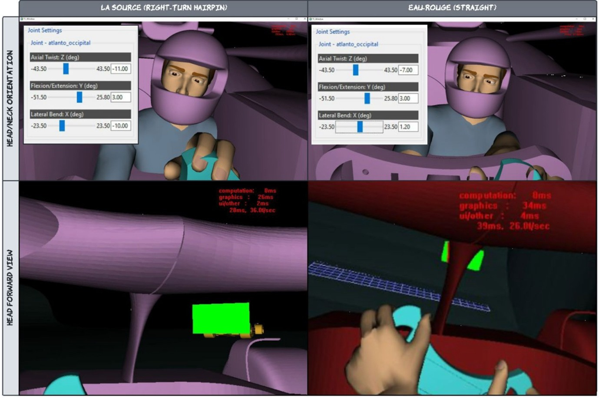

The Halo was created by the Fédération Internationale de l'Automobile (FIA) as a device that safety regulatory change in 2018
after years of fatal crashes. The Halo is manufactured from Ti-6Al-4V titanium alloy which is engineered to withstand loads of up to
125kN while integrating into the car’s primary crash systems . Despite proven lifesaving performance in major incidents including those
involving Charles Leclers (2018) , Zhou Guanyu (2022) and Romain Grosjean (2020) the Halo has generated debate regarding the aerodynamic
impact , reduced visibility and its increased physical strain on drivers. Engineering analysis highlights the challenges due to the reduced
airflow around the ait intake and rear wing . This may influence the downforce and power unit efficiency. Finite element research show that the
materials ability to deform without compromising its ability to withstand extreme loads. This is through controlled elastic and plastic deformation
and this prevents structural fracture which minimises the risk of cockpit intrusion. Ergonomic studies reveal that the central pillar creates only a
narrow visual obstruction this is determined using Complementary Digital Human Modelling. Overall, the findings indicate that although the Halo
presents aerodynamic and ergonomic constraints. However its ability in preventing fatal injuries makes it an essential role within modern
motorsport safety.
Introduction
There is a moment in the cockpit when travelling at speeds over 200 mph, (miles per hour) where the barrier between survival
and tragedy is reduced to a millisecond. The halo is a t-shaped multi-joint titanium round beam which is located above the driver's
head which has been engineered to protect against the flying debris, collisions with drivers and stationary objects
(Lin and Papadopoulos, 2020).While the Halo is recognised for its essential safety features there are major concerns
to the ergonomic and visual limitations for the drivers. Fédération Internationale de l’Automobile (FIA) made the halo device mandatory
in all formula one cars in 2018 (FIA , 2017) after several fatal crashes and incidences including the deaths Henry Surtees (2009),
Jules Bianchi (2014) and Justin Wilson (2015) and the severe injury to Felipe Massa (2009). The halo represents modern safety in motorsport.
However, it has caused great controversy within the racing community regarding the effects on the car's aerodynamics, driver visibility,
and the new challenges the drivers must overcome. The most of concern is neck muscle strain and visual strain (Rosalie and Malone, 2018).
This research project will focus on whether the safety benefits outweigh the functional limitations.
Analysis and Discussion
DESIGN AND ENGINEERING OF THE HALO
The halo was developed by the FIA as a safety measure to protect the drivers from head injuries against collisions with other drivers and other
debris. The Halo consists of a T-shape multi-jointed beam capable of withstanding forces up to 125kN.
This is equivalent to the weight of a double decker bus (Cherukara and Yeddu, 2024 ).
The Halo is made up from five key components; these include the central pillar, the two rear pillars and the two quarter circle
rings ( Raikar, 2022).The Main loop is a c shaped tube that is connected to the central pillar and the rear
brackets secure the central pillar to the chassis ( Raikar, 2022)
The halo was attached to the car in three places, this forming part of the primary crash structure which is designed to deflect large objects
away from the cockpit (Shendge, Shinde and Patel, 2021). However, integrating the Halo device into the existing
car designs there were critical challenges. One challenge was due to the aerodynamics being compromised, as airflow was disturbed.
Airflow disruption was around the air intake and the rear wing being compromised, the rear wing can reduce the downforce and reduces
the engines efficiency and effectiveness ( Anima 2019, Lin and Papadopoulos, 2020).
IMPACT PROTECTION AND SAFTEY REAL SITUATIONS
The Halo’s Protective ability has been demonstrated repeatedly in real-world Formula one since its introduction in 2018. During the Belgian
Grand Prix 2018, Charles Leclerc’s Sauber was struck by Fernando Alonso’s airborne McLaren which hit the halo instead of Charles’s head.
This was confirmed by the impact dents on the halo showing that this device saved Charles’s life (< a href = "#B18" >Baldwin , 2018 ).
Another example of when the Halo saved a driver’s life from a fatal accident occurred to Zhou Guanyu’s crash at Silverstone in 2022.
The car rolled over and was stuck between the tyre barrier and the catch fence (Cherukara and Yeddu, 2024 ).
During this accident, the car slid on the halo and Zhou was trapped for several minutes. After being rescued and cleared by medical staff, Zhou himself
remarked that the halo had “saved” his life (< a href = "#B22">Baldwin , 2022). In Zhou’s Silverstone accident the roll-hoops collapsed
on impact which meant only the halo separated his helmet from the ground (Kempema, 2024 , < a href = "#B22">Baldwin , 2022).
Romain Grosjean’s accident in the Bahrain 2020 Grand Prix was another example on how the Halo prevented a fatal incident. The car
collided at a speed of “140 miles per hour ” (Cherukara and Yeddu, 2024 ) with a stationary barrier that split the
car open as it passed through it and mainly due to the halo device that the driver survived (Cherukara and Yeddu, 2024 ).
MATERIALS BREAKDOWN
The halo is manufactured from Ti-6A1-4V (grade 5) titanium alloy (Cherukara and Yeddu, 2024 )
which was chosen for is strength and stiffness and resistance to impact or corrosion. The titanium can withstand a static load
of 125kN(Cherukara and Yeddu, 2024 ). Finite-element studies show that under impact,
Ti-6Al-4V deforms elastically and plastically to dissipate energy while preventing fracture or intrusion into the cockpit (a href = "#R2022"> Raikar, 2022).
VISIBILITY AND PERFORMANCE CONSIDERATION
Visibility through the halo device has been a crucial concern since it has been implicated in formula one particularly
about the obstruction by the centralfront pillar (Srinivasan, Demirel 2022).
A conducted study (Srinivasan, Demirel 2022) with Digital human modelling (DHM) to quantify the visual obstruction
by different variations of the halo using driver manikins and a virtual cockpit simulation showed
that in figure 1 (Srinivasan, Demirel 2022 figure 5 page 4 )
showed that the central pillar only created a narrow obstruction directly in front of the driver
which confirmed that most of the forward field of view remained
unaffected.

Figure 1 – View of the driver's vision form the front (Srinivasan, Demirel 2022).
It further stated that “the blockage occurs only in a small central region of the driver’s forward view, while lateral
visibility remains clear” (Srinivasan, Demirel 2022). Although the study did not measure the on-track lap effects it
was concluded that the interference that the halo produced was limited and quantifiable and while it slightly reduces visibility the
ergonomically affect on the driver's awareness is minimal compared to it proven safety benefit.
The Halo has transformed Formula One safety by providing proven head protection in major accidents , including those involving Leclerc,
Zhou, and Grosjean (< a href = "#B18" >Baldwin , 2018 , Cherukara and Yeddu, 2024 ) .
While concerns remain regarding aerodynamic constraints and slight visibility limitation (Srinivasan, Demirel 2022),
these effects are minor and manageable. Material and structural engineering demonstrate the titanium frame’s ability to withstand
extreme forces(Cherukara and Yeddu, 2024 ). Studies also show that visual obstruction is
minimal and does not significantly impair driver awareness (Srinivasan, Demirel 2022).
Overall, the Halo’s life preserving ability far outweighs its drawbacks, establishing it as an essential and permanent element of
modern motorsport safety engineering.
Demirel, H.O., Jennings, A. and Srinivasan, S. (2022) 'An early design method to quantify vision obstruction: formula
one (F1) halo case study', in Digital Human Modeling and Applications in Health, Safety, Ergonomics and Risk Management.
Anthropometry, Human Behavior, and Communication. Cham: Springer, pp. 32-44. doi: https://doi.org/10.1007/978-3-031-05890-5_3. Available at:
https://dl.acm.org/doi/10.1007/978-3-031-05890-5_3 (Accessed: 10 October 2025).
Kempema, J.M. (2024) 'Formula one: a "crash" course in motorsports medicine', Trauma Surgery & Acute Care Open, 9(Suppl 2),
p. e001402. doi: https://doi.org/10.1136/tsaco-2024-001402. Available at:
https://tsaco.bmj.com/content/9/Suppl_2/e001402 (Accessed: 10 October 2025).
Raikar, D. (2022) 'Modal and explicit analysis of formula 1 halo', International Journal for Research in Applied Science & Engineering
Technology, 10(5), pp. 2671-2675. doi: https://doi.org/10.22214/ijraset.2022.42490. Available at:
https://www.ijraset.com/research-paper/modal-and-explicit-analysis-of-formula1-halo (Accessed: 10 October 2025).
Rosalie, S.M. and Malone, J.M. (2018) 'Effect of halo-type frontal cockpit protection on overtaking', BMJ Case Reports, 2018,
p. bcr-2018-225427. doi: https://doi.org/10.1136/bcr-2018-225427. Available at:
https://casereports.bmj.com/content/2018/bcr-2018-225427 (Accessed: 10 October 2025).
Srinivasan, S. and Demirel, H.O. (2022) 'Quantifying vision obstruction of formula one (F1) halo concept variants',
Digital Human Modeling and Applications in Health, Safety, Ergonomics and Risk Management. doi: https://doi.org/10.1007/978-3-031-05890-5_2.
Available at: https://pubs.lib.uiowa.edu/dhm/article/id/31755/
(Accessed: 10 October 2025).